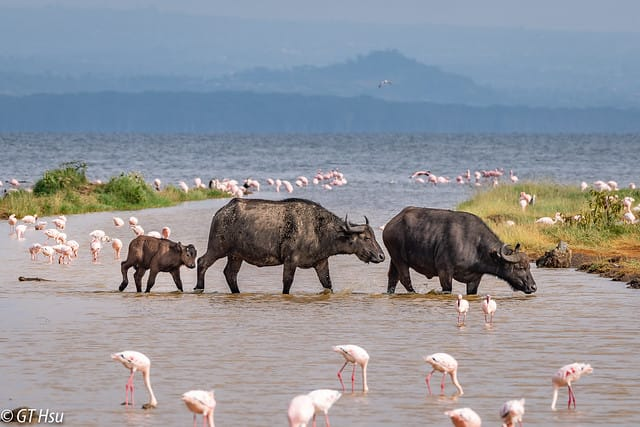

Top Destinations in Kenya
Explore the most beautiful and exciting places in Kenya, each offering unique experiences and unforgettable adventures.

Maasai Mara
Experience the Great Migration and abundant wildlife in one of Africa's most famous safari destinations.

Diani Beach
Relax on the pristine white sands of Diani Beach, with crystal-clear waters and a variety of water sports.

Mount Kenya
Challenge yourself with a climb up Mount Kenya, the second-highest peak in Africa, offering stunning views and diverse flora and fauna.

Lake Nakuru
Visit Lake Nakuru National Park, home to thousands of flamingos and other bird species, as well as rhinos and lions.

Nairobi
Explore Kenya's vibrant capital city, Nairobi, with its rich history, modern attractions, and nearby national park.